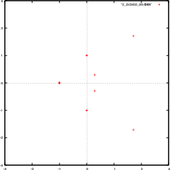
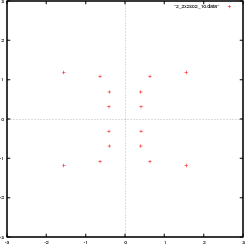

|  |  |
| Animation 1: No boundary conditions | Animation 2: Boundary condition in both directions |
|  | |
| Animation 3: Boundary Conditions only connecting the rows |
Animation 4: Boundary Conditions only connecting the columns |
Animation of Q = 3
Home Page